P 相当于列操作，P 的逆相当于同等操作的行操作
一定要注意是不是单位向量
实对乘矩阵不同特征值的特征向量相互正交
如果一个矩阵的特征值没有 0，则这个矩阵可逆
相似必有相同的特征值，反之则不然，因为可能不能相似对角化
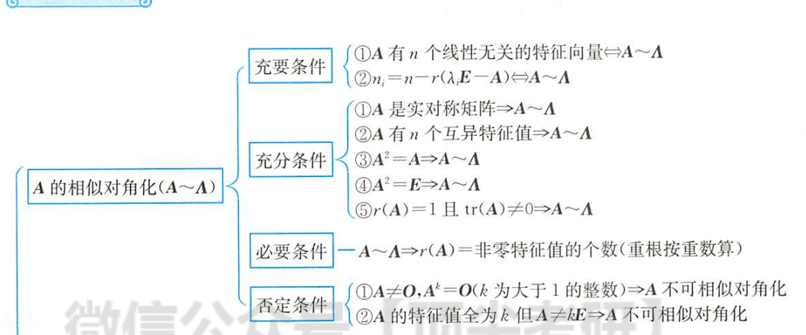
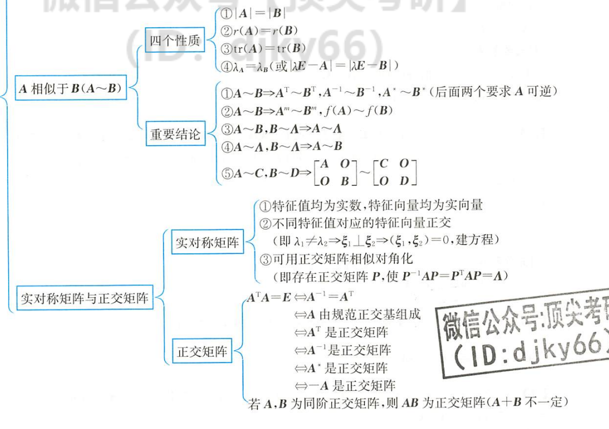
AP=PB，P 可逆，则 A,B 相似
4 个性质
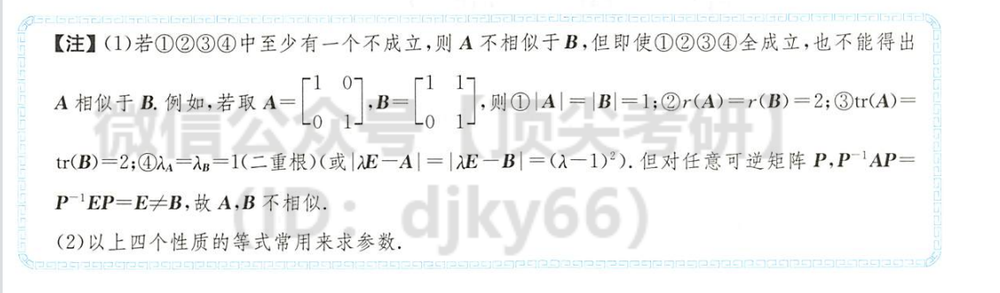
正交化
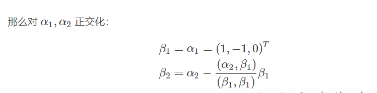
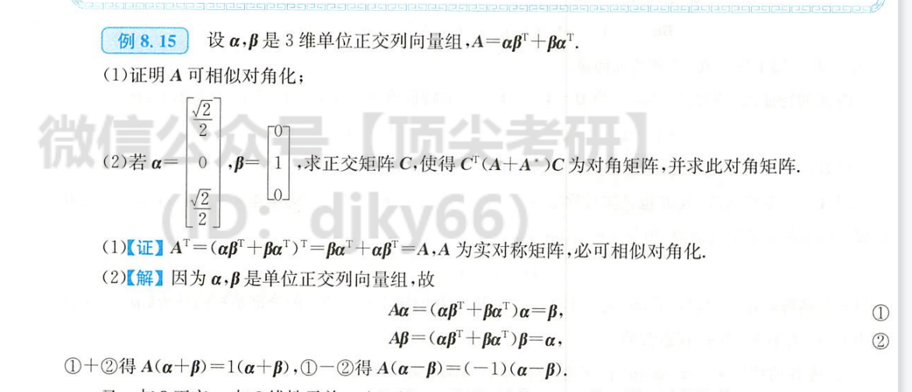
任意实对称矩阵，都可由两个正交向量相乘的矩阵加上他的反制矩阵组成，所以必有特征值：k，-k，0
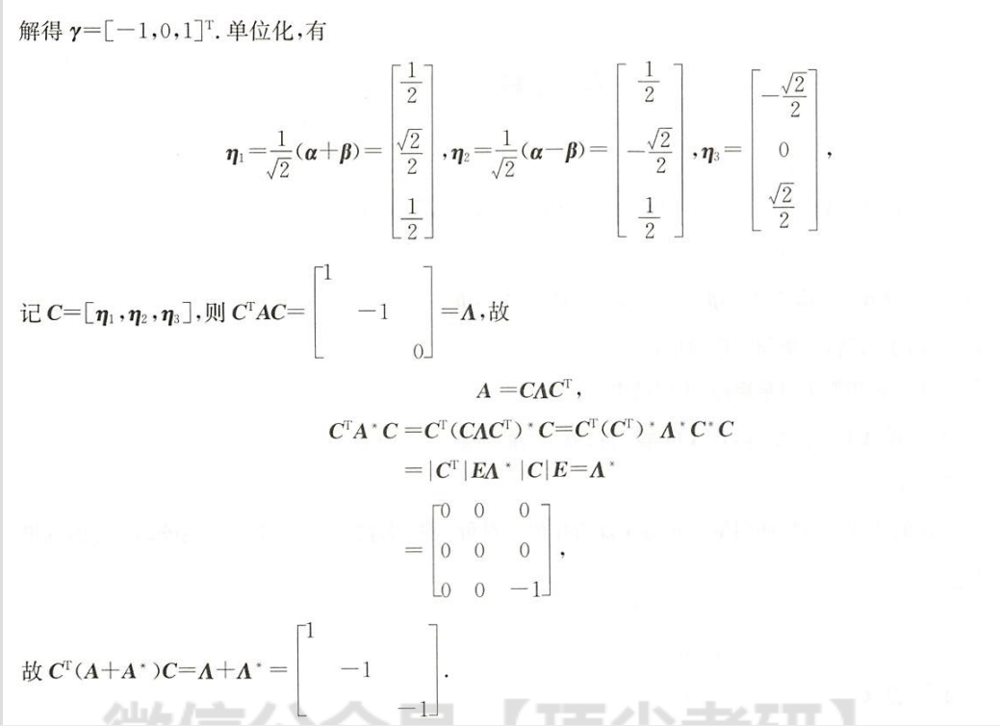
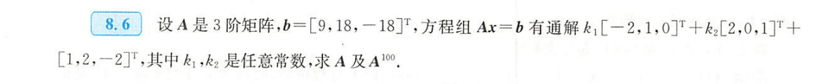
方程组也可以特征值来求
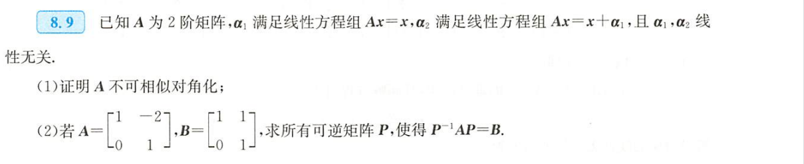
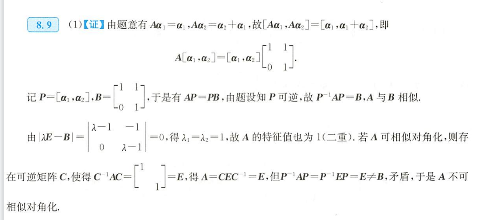
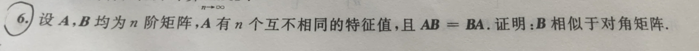
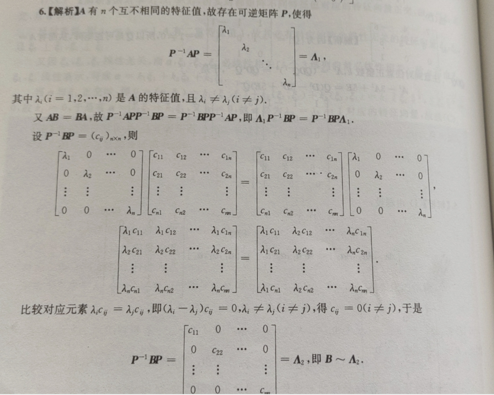
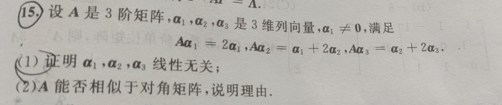
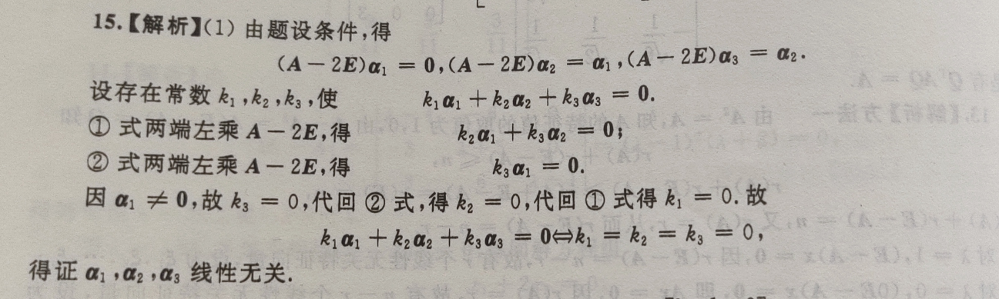